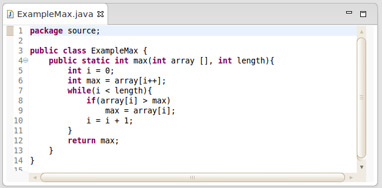

Exemplo programa Max
O programa Max, consiste em um método de recebe como entrada 2 parametros (um array de inteiros e um inteiro com o tamanho do array),
e retorna o maior valor dentro daquele array.
Codigo fonte

O caso de teste a seguir foi feito usando o JUnit, que verifica se o o retorno de max([1,2],2) é 2.
Classe de teste

Para conseguir a cobertura de DUAs precisamos rodar os testes com o Runner do JUnit modificado, que consiste em setar a BA-DUA como agent,
a BA-DUA instrumenta as classes que serão utilizadas pelo teste, e quando o teste é executado, ela coleta a cobertura das DUAs,
a Jaguar, responsável pelo JUnit Runner modificado, também é responsável por guardar os dados de cobertura após a finalização dos testes,
guardando em um arquivo chamado Baduino.xml na raiz do projeto.
Todo esse processo é feito por: Clicar com o botão direito do mouse no projeto -> Baduino -> Run Tests
Após ter a cobertura no XML, o plugin se encarrega de exibir as DUAs na sua visualização
Para visualizar as DUAs: Clicar com o botão direito do mouse no projeto/pasta/pacote/classe -> Project/Folder/Package/Class Visualization
Obs: A visualização é feita hierarquicamente, clicando em Project Visualization será exibido a cobertura de DUAs de todo o projeto, e assim por diante.
Visualização do plugin

Na visualização é possivel clicar nas DUAs e as linhas da Definição e Uso serão pintadas no Codigo Fonte, como mostra nas figuras abaixo.
DUAs cobertas e não cobertas serão pintadas de verde e vermelho, respectivamente.
Também é possivel remover todas as DUAs pintadas, clicando no Remove Highlight, no canto superior direito da View
DUA Coberta

DUA não coberta